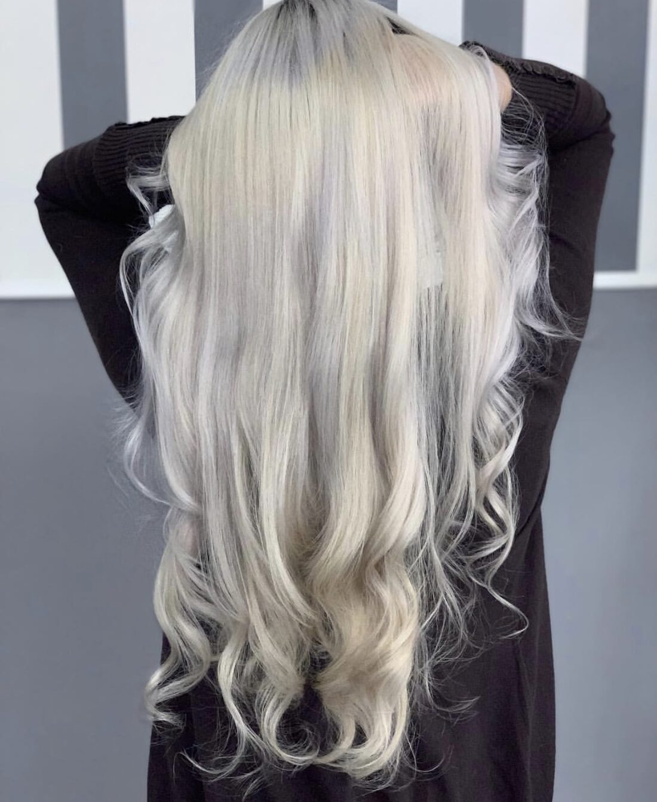
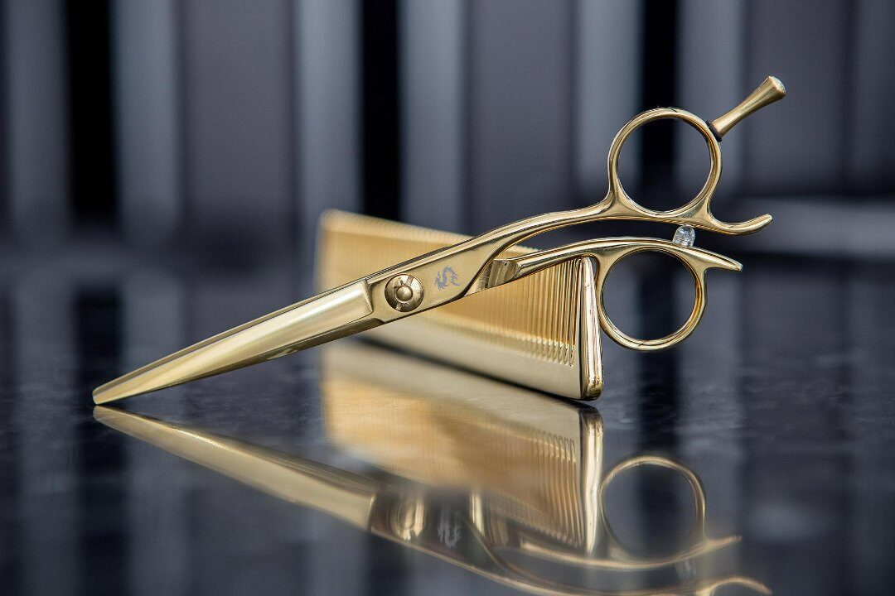
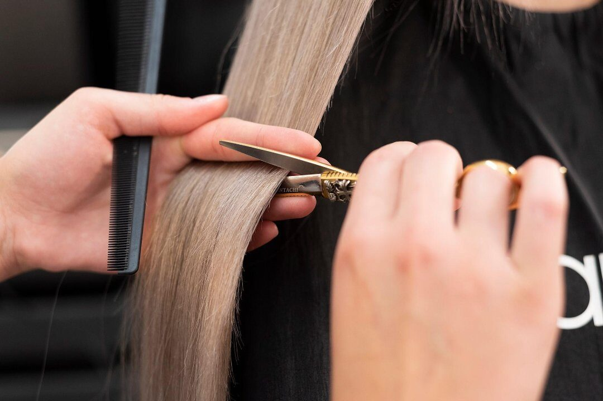
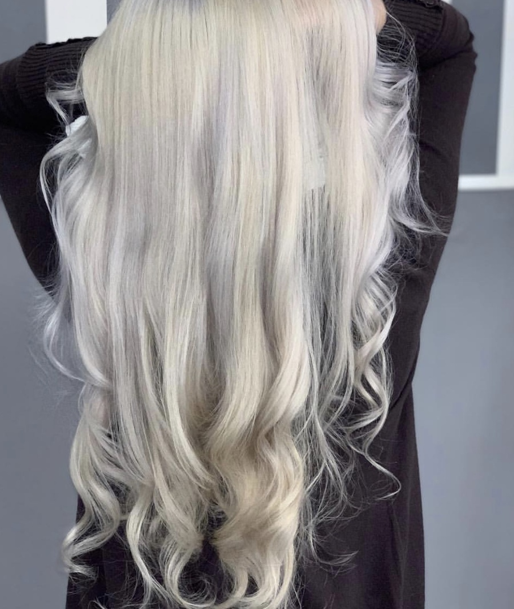
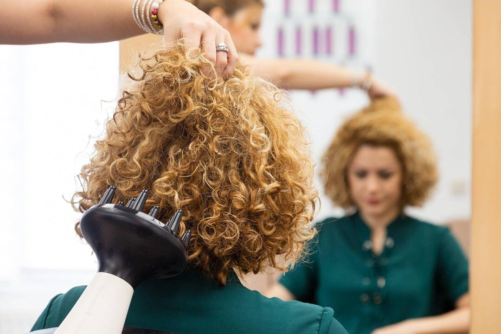

Diagnóstico capilar
Se estudia tu cabello y tu cuero cabelludo antes de tocar nada: porosidad, historial de color y qué aguanta. De ahí sale todo lo demás.
Diagnóstico capilar, asesorías, alisados y tratamientos, balayage y estética. Un salón donde primero se estudia tu pelo y después se decide qué se hace.

Ani de León Beauty Center trabaja con una idea sencilla: entender el cabello antes de tocarlo. Su especialidad es el diagnóstico capilar y la asesoría — decirte qué te conviene y qué no —, y de ahí salen los alisados, los tratamientos, el balayage y la estética.
Está en la calle Enmedio, 37, en la primera planta, y se trabaja con cita previa. Ani dirige el salón y forma equipo con Victoria y Carmen.

Cada servicio empieza igual: diagnóstico, asesoría y, solo después, manos.
Se estudia tu cabello y tu cuero cabelludo antes de tocar nada: porosidad, historial de color y qué aguanta. De ahí sale todo lo demás.
Qué te favorece y qué no, con el pelo y con la cara que tienes. Sin vender humo.
Alisados orgánicos, hidratación y reconstrucción para devolver el cuerpo al pelo castigado.
Mechas, balayage y colorimetría. Los rubios que se ven en esta web se hacen aquí dentro.
Cuidado de la piel y tratamientos corporales, en la misma casa y aprovechando la cita.
Manicura y pedicura con Carmen, que en las reseñas sale siempre con la palabra mimo.
Peinados de boda y celebración, hechos a medida de lo que traes en la cabeza.
Se trabaja con cita previa y el presupuesto se cierra en el salón antes de empezar, según el largo y el estado del cabello. Escríbenos y te lo decimos sin compromiso.
«Fui a hacerme un alisado orgánico. Ani es muy amable y me atendió Victoria, que fue muy dulce y profesional: me consintió el cabello muchísimo y le dio mucho amor.»
«He ido por primera vez donde Ani y salí encantada. Todas son muy profesionales. Ani es un encanto, me asesoró en cuanto a lo que necesitaba y quedé fascinada.»
«Sin duda, me quedo con Ani: por su profesionalidad, su amabilidad y su cariño. Enseguida captaron la idea de recogido que tenía y superaron mis expectativas.»
Fotos del salón y de trabajos reales: decoloraciones, alisados y color.



Un equipo pequeño: se sabe tu nombre y se acuerda de tu pelo.
Especialista y estilista. Diagnóstico capilar, asesoría y la última palabra sobre el color.
Estilista. Alisados y tratamientos: la que te deja el pelo suave y te lo explica en casa.
Manicura. Manos y uñas, con el mimo del que hablan sus clientas.
Es un salón pequeño y con cita previa: se trabaja sin prisas y con tu pelo por delante. Escríbenos con lo que necesitas y te damos día y hora.
654 35 76 28Cita previa para todos los servicios. Si es tu primera vez, cuéntanos qué llevas hecho en el pelo: así preparamos el diagnóstico.